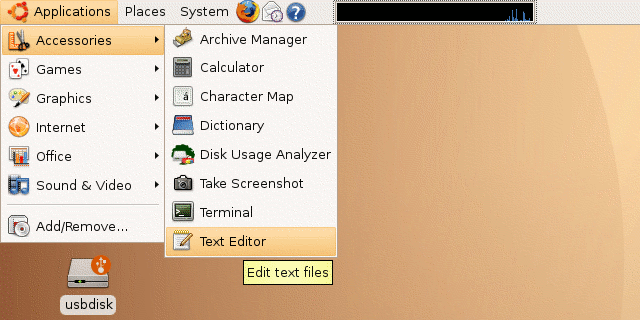
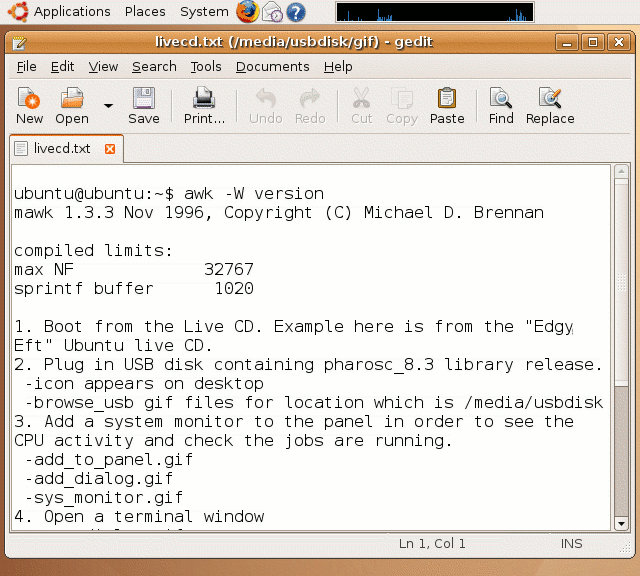
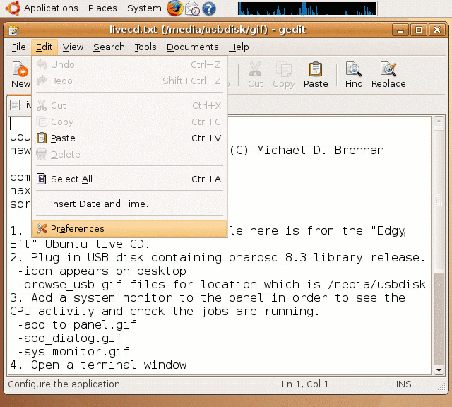
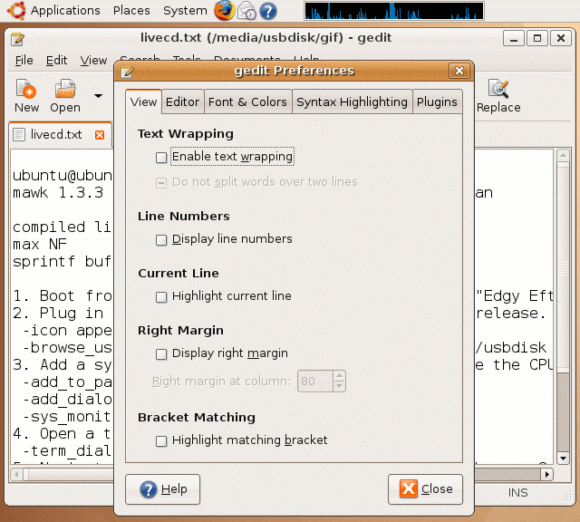
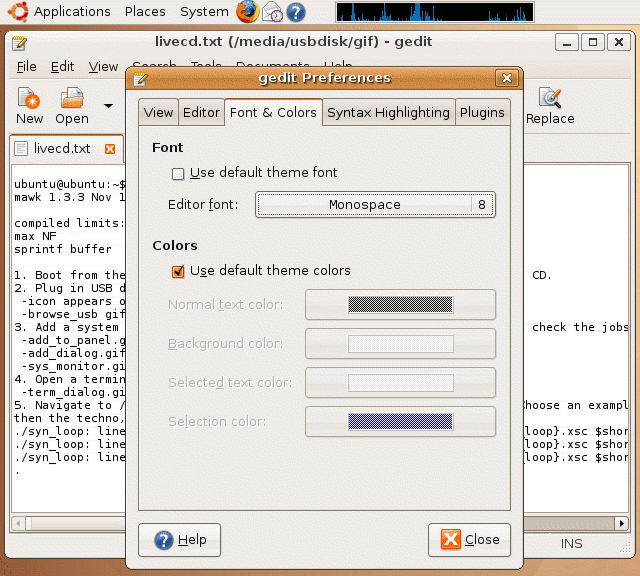

| vlsitechnology.org /Live CD help /text editor | |
Gnome text editor | |
Linux help
Windows help
Linux Live CD
A text editor is an editor that can only write ascii files, and normally they can only read ascii files too. The Gnome standard text editor (equivalent to Windows Notepad) is gedit and can be accessed from the
Applications -> Accessories -> Text Editor |
menu.
No choices are availabe. This is the only ascii test editor.

The font that gedit uses is absurdly large (unless you have poor eyesight) and makes it hard to read or edit text files that contain a lot of information.

The large font size can be changed by editing the preferences with the
Edit -> Preferences |
menu.

For viewing and editing text files with technical information, I recommend disabling the text wrap option. Text wrapping is a good idea when creating text files for pasting into emails or word processing documents.

Set the font size to 8pt so that lots of information can appear in the gedit window.
